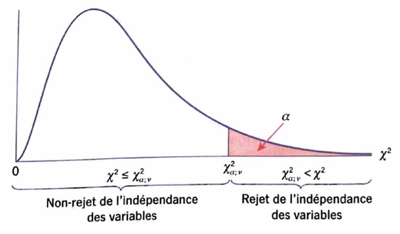
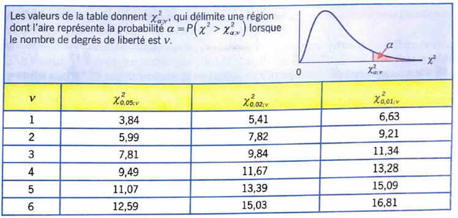

Le test d'indépendance du khi-deux est l'un des tests statistiques les plus utilisés dans les domaines du marketing, de la finance, de la comptabilité et de la gestion des ressources humaines. Il permet de déterminer si deux variables qualitatives sont liées ou indépendantes.
On souhaite souvent répondre à des questions telles que :
Lorsque les deux variables sont qualitatives, le test χ² constitue l'outil statistique approprié. Le procédé du test est identique quel que soit le domaine de l'étude. On commence d'abord par formuler les hypothèses du test.
Hypothèse nulle (H₀)
Les deux variables sont indépendantes.
Hypothèse alternative (H₁)
Les deux variables sont associées.
| Rendement \ Performance | Moyen | Élevé | Très élevé | Total |
|---|---|---|---|---|
| Inférieur | 30 | 10 | 10 | 50 |
| Moyen | 10 | 60 | 10 | 80 |
| Supérieur | 20 | 30 | 20 | 70 |
| Total | 60 | 100 | 40 | 200 |
Ce tebleau porte le nom de tableau de contingence ou tableau à double entrée. Ses fréquences sont dites observées (\(f_o\)).
Le test compare les effectifs observés avec les effectifs attendus si les deux variables étaient totalement indépendantes. Plus l'écart est important, plus il est probable qu'il existe une association entre les variables.
Les effectifs théoriques ou espérés sont les effectifs qu'on aurait obtenu si les deux variables étaient indépendantes. Autrement dit, ce sont les effectifs sous l'hypothèse nulle. L'effectif théorique \(f_t\) de la \(i^{ème}\) ligne et de la \(j^{ème}\) colonne est donné par : \begin{equation} f_t = \frac{\text{Total de la $i^{ème}$ ligne}\times \text{Total de la $j^{ème}$ colonne}}{\text{Nombre total des données}} \end{equation}
| Rendement \ Performance | Moyen | Élevé | Très élevé | Total |
|---|---|---|---|---|
| Inférieur | 15 | 25 | 10 | 50 |
| Moyen | 24 | 40 | 16 | 80 |
| Supérieur | 21 | 35 | 14 | 70 |
| Total | 60 | 100 | 40 | 200 |
\begin{equation} \chi^2 = \sum \frac{(f_o-f_t)^2}{f_t} \end{equation}
Cette statistique mesure l'écart global entre les données observées et celles attendues sous l'hypothèse d'indépendance.En reprenant l'exemple principal, l'estimation de cette statistique donne : \(\hat{\chi}^2 = \frac{(30-15)^2}{15} + \frac{(10-25)^2}{25} + \frac{(10-10)^2}{10} + \frac{(10-24)^2}{24} + \frac{(60-40)^2}{40} + \frac{(10-16)^2}{16} + \frac{(20-21)^2}{21} + \frac{(30-35)^2}{35} + \frac{(20-14)^2}{14} = 47,75\)
Sous l'hypothèse nulle, la statistique de test \(\chi\sim \chi_{\nu}\). \(\nu\) est le nombre de dégrés de liberté. \(\nu = (l-1) \times (c-1)\) où \(l\) est le nombre de catégories de la première variable, \(c\) est le nombre de catégories de la deuxième variable. Dans le cas de notre exemple, \(l=3\), \(c=3\), donc \(\nu=4\).
La valeur critique du test dépend du seuil de signification \(\alpha\) choisi pour le test et du nombre de dégrés de literbé \(\nu\). Elle est notée par \(\chi_{\alpha,\nu}\). On rejette l'hypothèse nulle si \(\hat{\chi}>\chi_{\alpha,\nu}\).

On peut utiliser une table de valeurs critiques de \(\chi^2\) ou un logiciel statistique (R ou Python par exemple) afin de déterminer la valeur critique correspondante au test effectué. Un extrait de valeurs critiques de \(\chi^2\) est présenté ci-après :

Ainsi avec un seuil de signification \(\alpha=0,05\), la valeur critique pour notre exemple principal est \(\chi_{0,05;4}=9,49\). Puisque \(\hat{\chi}^2=47,75\), alors \(\hat{\chi}^2>\chi_{0,05;4}\). On rejette donc l'hypothèse nulle d'indépendance entre les deux variables au seuil de signification \(\alpha=0,05\). Il y a donc un lien entre le niveau de performance au travail et le résultat obtenu à l'épreuve lors du processus de recrutement.
tab <- matrix(c(30,10,10,10,60,10,20,30,20), nrow=3, byrow=TRUE)
chisq.test(tab)
| Valeur-p | Conclusion |
|---|---|
| p < 0,05 | On rejette H₀ : les variables sont associées. |
| p ≥ 0,05 | On ne rejette pas H₀ : aucune preuve d'association. |
# Create your observed data table (Contingency Table)
observed = np.array([[30, 10, 10],[10, 60, 10], [20,30,20]])
# Run the Chi-Square test
# The function automatically calculates expected values and degrees of freedom
chi2_stat, p_val, dof, expected = chi2_contingency(observed)
# Decision making
alpha = 0.05
if p_val < alpha:
print("Result: Reject the Null Hypothesis (Variables are significantly associated).")
else:
print("Result: Fail to reject the Null Hypothesis (Variables are independent).")
Le test d'indépendance du khi-deux permet de vérifier l'existence d'une association entre deux variables qualitatives. Lorsque le test est statistiquement significatif, il ne fournit pas la force de l'association des variables impliquées. Pour ce faire, il existe des grandeurs permettant de mesurer le degré de liaison des variables. Nous aborderons en particulier le coefficient V de Cramér.
| Valeur du coefficient de cramér | Intensité du lien |
|---|---|
| 0,000 - 0,045 | Très faible |
| 0,045 - 0,090 | Faible |
| 0,090 - 0,180 | Moyenne |
| 0,180 - 0,360 | Forte |
| 0,036 - 1,000 | Très forte |
En reprenant notre exemple principal, on détermine le V de Cramér associé par : \( V = \sqrt{\frac{47,75}{200\times 2}} = 0,12\). Le lien d'association entre les deux variables est donc relativement fort.
Évidemment, si le test n'est pas statistiquement significatif, il n'y a pas lieu de calculer le coefficient de Cramér.